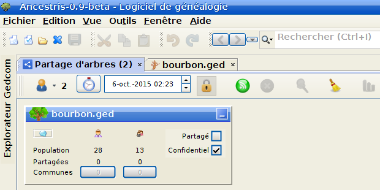
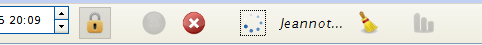

Le partage d'arbres
Son fonctionnement
Comprendre la barre de menu :

Sur l'image ci-dessus, vous voyez un menu avec respectivement :
- Une icone représentant un petit bonhomme
En cliquant dessus, vous allez pouvoir voir les pseudos des
personnes actuellement en collaboration de recherche de correspondances.
Vous pourrez décocher ou cocher les personnes dont vous estimez
qu'il est inutile d'effectuer une recherche de correspondances.
- Un chiffre
Ce chiffre donne le nombre de personnes actuellement en collaboration
de recherche de correspondances. Ce chiffre est d'ailleurs repris
dans le titre de l'onglet de partage d'arbres.
- Une horloge
Cette horloge vous sert pour remettre à la date et heure actuelles
le temps de partage. Il faut mieux éviter de cliquer dessus, car si
vous le faites, vous ne pourrez pas partager, car votre temps de
partage sera mis à zéro.
- Un champ avec date et heure
Vous pouvez régler le temps de partage pour une période donnée
en réglant la date et l'heure de fin de partage comme vous le voulez.
A priori vous n'avez pas besoin de vous occuper de ce champ, car le simple
fait de se mettre en partage, va activer le partage pendant
toute la durée de fonctionnement d'ancestris avec un maximum de
douze heures. Ca devrait suffire pour combler tous les besoins de chacun.
- Un cadenas
Important. Si vous cliquez sur le cadenas, ou si vous avez spécifié
dans la configuration que par défaut vous voulez préserver les
données confidentielles, ces dernières ne seront jamais comparées
avec celles des autres utilisateurs.
- Un bouton vert
Et bien oui, c'est sur celui là qu'il faudra cliquer pour
lancer la recherche de correspondances avec d'autres utilisateurs
d'Ancestris.
- Un bouton rouge
Pour le moment, il est gris et pas rouge. Mais il devriendra
rouge dès que vous aurez cliqué sur le bouton vert. En effet
ce bouton rouge sert à arrêter le partage.
- Une loupe
Là encore, elle est grisée. Mais que le bouton vert aura été
activé, vous la verrez. Elle sert à interroger
les autres utilisateurs d'Ancestris en partage d'arbres
pour voir si il existe des similitudes entre le votre et le leur.
En général, après avoir cliqué sur le bouton vert, on clique
immédiatement sur la loupe.
Quand vous cliquerez sur la loupe
des pointillés circulaires se mettront à tourner pendant toute
la durée de la recherche, et les pseudos des utilisateurs
interrogés apparaitront sur la droite.
- Un balai
Il vous servira après avoir effectué une recherche à effacer
les résultats des recherches précédentes.
- Un graphe
Il est grisé pour le moment. Il ne prendra des couleurs que
lorsque d'autres utilisateurs auront interrogé votre
ordinateur. Si c'est le cas, en cliquant dessus vous pourrez
obtenir des informations sur les recherches effectuées et les
résultats obtenus par les autres utilisateurs dans une fenêtre
qui s'ouvrira.
- Un ensemble de trois petits cadres
Les fenêtres des résultats obtenus peuvent être déplacés
à votre convenance. Si vous voulez redonner un peu d'ordre
à la fenêtre de partage, vous cliquez dessus et comme par
magie, tout sera bien rangé.
- Une roue dentée
C'est l'accès au menu de configuration du partage d'arbres.
Sous cette barre de menu, vous avez un cadre qui représente
votre généalogie que vous allez mettre en recherche de correspondance.
Vous avez le nombre de personnes présentent dans votre arbre, le nombre
de familles, deux cases pour cocher si vous voulez ou non mettre
en partage cet arbre (cela est utile si vous avez plusieurs arbres
ouverts en même temps et que vous ne voulez partager que certains
d'entre eux), et pour activer la confidentialité (si vous avez
oublié de le faire dans la configuration par exemple).
Si la capture ci-dessus, on voit que cette généalogie comprend 28
personnes et 13 familles. Pour le moment rien n'est partagé, car
on voit que la mise en partage n'a pas été activée (bouton vert)
d'où les "0" et "0" que vous avez sous les nombres ci-dessus. On
voit aussi que "Partagé" n'est pas coché, et que "Confidentiel"
est coché.
Activation du partage d'arbres :
Facile! On clique sur le bouton vert.
Maintenant, si des gens recherchent des correspondances, ils pourront
interroger votre ordinateur.
A vous maintenant d'interroger les autres ordinateurs. Il vous suffit
de cliquer sur la loupe.
Le bouton vert devient grisé, alors que le bouton rouge apparaît.
La recherche commence. Vous pouvez voir la petite roue qui tourne
et le pseudo de chaque ordinateur qui est interrogé.

Vous allez pouvoir voir si d'autres personnes ont des similitudes
avec votre généalogie.
Allons vite voir le résultat de la recherche.